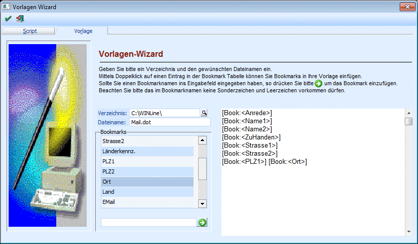
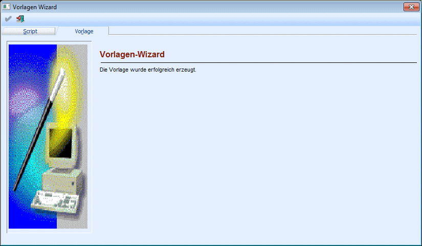

Mit dem Vorlagen Wizard können Word-Vorlagen (DOT-Dateien) erstellt werden, in denen Bookmarks gespeichert werden, die beim Abarbeiten von MESO Connect - Scripts in echte Daten umgewandelt werden können.
Der Vorlagen Wizard wird im MESO-Connect Wizard durch Anklicken des Registers Vorlage aufgerufen.

Folgende Eingabefelder können bearbeitet werden:
Ø Verzeichnis
In diesem Feld kann das Verzeichnis gewählt werden, in dem die Vorlage angelegt werden soll. Durch Drücken der F9-Taste kann nach allen vorhandenen Verzeichnissen gesucht werden. Wird kein Verzeichnis angegeben, wird das aktuelle Programmverzeichnis verwendet.
Ø Dateiname
Hier muss der Name der DOT-Datei eingegeben werden, wobei die Dateierweiterung .DOT nicht mit angegeben werden muss. Wenn der Name ohne Erweiterung angegeben wird, wird die Erweiterung vom Programm automatisch dazugegeben.
Achtung:
Es können keine bestehenden Vorlagen bearbeitet werden.
In der Tabelle Bookmarks wird eine Auswahl von Standardeinträgen vorgeschlagen, die durch einen Doppelklick in das Notizfeld übernommen werden können.
Wird eine Bookmark in der Auswahl nicht gefunden, dann kann diese in dem unter der Tabelle zur Verfügungen stehenden Eingabefeld eingetragen und durch Anklicken des Buttons in das Notizfeld übernommen werden.
Im Notizfeld selbst werden die Bookmarks so angeordnet, wie sie übergeben wurden. Soll zwischen 2 Bookmarks ein Zeilenumbruch erfolgen, so muss das auch definiert werden. Ansonsten ist das Notizfeld ein "RTF-Feld", d.h. es können die gewohnten Formatierungsanweisungen gegeben werden.
Durch Anklicken des OK-Buttons wird die Vorlage (DOT-Datei) im angegebenen Verzeichnis gespeichert. Wenn das Speichern erfolgreich war, wird dies auch angezeigt.

Durch Drücken der ESC-Taste wird der Vorlagen Wizard geschlossen.